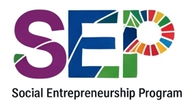
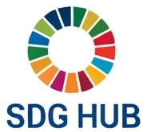
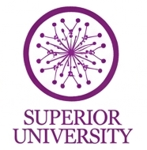

Practical, not preachy
Every workshop ends with something students do, not just something they hear.
EcoPulse Pakistan is a student-led series of four workshops that takes university students from understanding climate change to cutting their footprint, recycling better and running real campus projects.
IN PARTNERSHIP WITH



Awareness campaigns tell students that climate change is real, then stop. There is no structured pathway from knowing to doing, so good intentions fade and campuses stay the same.
EcoPulse closes that gap with a practical series that students run for students, with each session building one real habit and one real project.
Every workshop ends with something students do, not just something they hear.
Peers teach peers, with volunteer experts and faculty supporting the sessions.
Pre and post quizzes, attendance and action plans show what actually changed.
A reusable toolkit and in-kind campus support keep each run affordable.
Understand local climate risks in Pakistan and why universities are a powerful place to act.
Measure personal and campus footprints, then commit to a few habits that actually cut emissions.
Hands-on sorting demos, reuse ideas and ways to cut single-use plastic on campus.
Teams plan and present their own projects, then join a 30-day challenge to keep the habits going.
Measured with the same short quiz before and after the series.
Checked after Workshop 3 with a practical sorting activity.
Teams submit action plans and join the 30-day challenge.
No fees for students and no dependence on corporate tax-based CSR. Venue, equipment and volunteers come in-kind from the university.
Yes. Students are not charged. The pilot is funded by university support, local in-kind contributions and youth grants.
A venue, a projector and sound system, and permission to run four sessions. Everything else is handled by the student team and volunteers.
Optional items such as refreshments and student action support are scaled down first, and the core four workshops still run.
Attendance records, pre and post quizzes, submitted action plans and follow-up feedback from the 30-day challenge.
That is the plan. The workshop toolkit, student ambassadors and partnerships are designed to be reused at other universities.